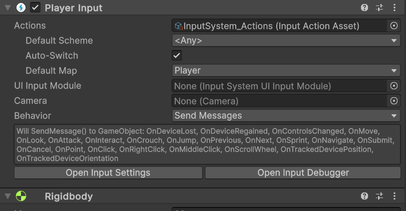
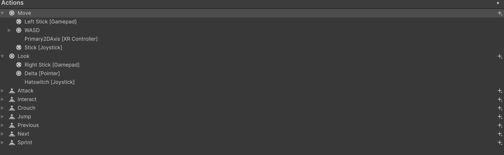
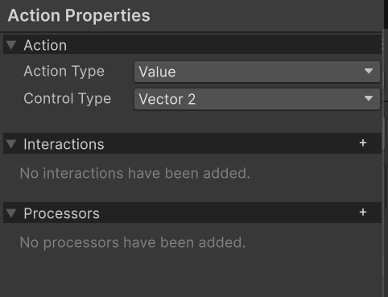
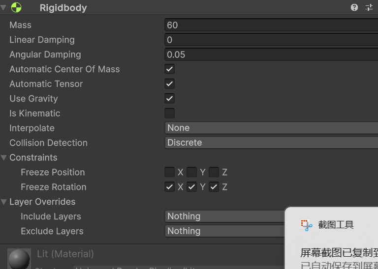
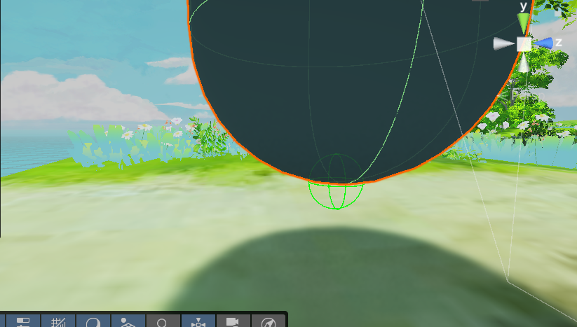

第一人称控制器
对于一个游戏而言第一人称控制器是一个非常重要的部分，它连接了游戏内的人物，玩家通过操作控制器来完成与游戏内的物品进行交互的功能。
对于他来说，有很多变量不能一次性给定，需要在游戏中调整某些数值的大小，不断调整譬如移动速度，跑步速度，跳跃高度等。空中控制系数，还有在视角方面，我们需要定义灵敏度，视角的长宽比例，摄像头的可渲染层。以及人物的状态，是否在跳跃状态，如果一个人物我们需要定义他的某些特殊的属性，比如他的是否可以进行二次跳跃，在什么反应时间内需要这样的操作。所以我们列举一些常用的第一人称需要了解的变量内容
- 基础属性
- walkspeed 人物的正常移动速度
- runspeed 人物的跑步速度
- jumpheight 人物的跳跃高度
- aircontrol 空中控制系数
- acceleration 加速度
- grounddrag 地面阻力
- airdrag 空气阻力
- 视角属性
- mousesensitivity 鼠标灵敏度
- maxlookangle 最大的视角角度
- 物理属性
- groundlayer 地面层
- groundcheck 地卖检测值
- groundcheckradius 地面检测半径
- 组件内容
- rigibody 刚体组件
- playerinput 玩家输入组件
- cameratransform 相机组件
- 状态变量
- isground 是否在地面
- isjump 是否在跳跃状态
- xrotation 相机的旋转角度
- moveinput 输入移动
- lookinput 输入视角
- jumpinput 跳跃输入
在这之中有些新内容时 UNIYT6 新增的内容，一方面，6 的增新内容增添了 UniversalRenderPipeline 为其默认的如渲染管线，也就是说我们可以直接在新建项目的时候就可以直接选择生成罪行的 URP lit 的材质渲染管线，来完成一些较为复杂的渲染过程。不过另外需要我们注意的是新增添了 input action 输入动作，我们需要在项目设置中进行设置，将输入动作设置为我们自己定义的输入动作。这让我们操作也变得非常容易。
这些是引擎部分的建模材质调节过程，并不在第一人称控制器的范围内。
移动
在我们规定好一些基础属性准备开始制作时我们还需要按照 unity 的官方文档，将我们的控制角色添加一个 rigidbody 刚体组件，用来处理物理运动。添加一个 playerinput 组件用来引入新增的输入组件。如下图  我们可以在其中二看到在 playerinput 的组件中已经引用了对应的 unity 提供的一个 inputsystem_action 的预制资源，我们先来看看其中都有什么？  首先我们看到的内容是主要的控制动作，比如移动，跳跃等等，当我们看向这些动作都有什么来控制的时候可以看到 move 需要通过一个二元向量来控制 
我们来看看官方文档如何进行描述这个作用
Each default action has bindings to several different types of Control. For example:
- The "Move" action is bound to the "WSAD" keyboard keys and arrow keys, a gamepad stick, the primary 2D axis on an XR controller
- The "Jump" action is bound to the space key, the "south" button on a gamepad, and the secondary button on an XR controller.
是的他已经帮我们绑定好了在不同操作方式中的不同操作按键，我们只需要获取在按键时所获取的输入值即可，但后把这个二输入值进行加工来控制角色的 tranform 组件来控制角色运行即可
所以我们就可以写出移动的代码了
private void GatherInput()
{
moveInput = playerInput.actions["Move"].ReadValue<Vector2>()；
}
这个代码表示提取我们通过操作wasd键或者方向键所获取的输入值，这个输入值按照官方文字当时一个二维数组，二维数组的数值存储在我们自己自行声明的全局变量moveInput中，以便于控制使用，这个函数沃恩需要放置在update的函数中每帧调用以用来更新我们的变量数据。
这个部分输出的数据moveInput我们需要在另一个函数中使用，这个函数用来拆分其二维向量的xy值，用来控制角色的移动，具体代码如下：
private void HandleMovement()
{
// 计算目标水平速度
bool isSprinting = playerInput.actions["Sprint"].IsPressed();
float targetSpeed = isSprinting ? sprintSpeed : walkSpeed;
Vector3 targetVelocity = (transform.right * moveInput.x + transform.forward * moveInput.y).normalized * targetSpeed;
targetVelocity.y = rb.linearVelocity.y; // 保持垂直速度不变
// 计算加速度
Vector3 velocityDifference = targetVelocity - rb.linearVelocity;
velocityDifference.y = 0; // 只在水平方向加速
float currentAcceleration = isGrounded ? acceleration : acceleration * airControl;
Vector3 movementForce = velocityDifference * currentAcceleration;
rb.AddForce(movementForce, ForceMode.Acceleration);
}
如果不放心刚体组件会因为重力效果导致角色会因为重力而摔倒，可以在这里进行更改：  其中的freeze rotation 冻结旋转冻结三个轴向的旋转， 除此之外我们需要把这个HandleMovement函数也放在update函数中每帧调用一次，以用来更新角色的移动。但是要放在GatherInput之后以为首先需要更新输入数据，才可以更新目标物体的移动！
地面检测
这个检测用来控制我们的角色在地面上时使用地面的控制系数，不在地面的时候我们使用空中的控制系数，保证我的的角色控制不出现可笑的bug，地面检测有两种方式
物理检测 什么叫物理检测，我们在我们人物的脚下生成一个大小固定的球形检测区域，这个检测区域的代码如下：
private void CheckGrounded() { bool wasGrounded = isGrounded; isGrounded = Physics.CheckSphere(groundCheck.position, groundCheckRadius, groundLayer); if (isGrounded) { isJumping = false; } // 落地时重置垂直速度 if (!wasGrounded && isGrounded) { rb.linearVelocity = new Vector3(rb.linearVelocity.x, 0f, rb.linearVelocity.z); } }其中的groundcheck是我们在人物脚下生成的一个球形检测区域，groundcheckradius是检测区域的半径，groundlayer是我们的地面层，这个地面层我们需要在项目设置中进行设置，将我们的地面层设置为一个单独的层，这样我们才能在检测时只检测地面层，而不会检测到其他物体。 我们需要在update函数中每帧调用一次这个函数，以用来更新我们的地面检测状态。 另外还有一个小技巧，如果我们就这样的写，我们并不能直接看到球形区域的大小，我们可以使用unity提供给我们的辅助函数来解决这个问题，代码如下：
private void OnDrawGizmosSelected() { Gizmos.color = Color.red; Gizmos.DrawWireSphere(groundCheck.position, groundCheckRadius); }其中的OnDrawGizmosSelected函数是unity提供的一个辅助函数，用来在场景中绘制一些辅助的图形，比如我们这里绘制的球形区域，这样我们就可以直接在场景中看到我们的球形区域的大小了。图片如下： 这样就可以便捷的调节这个地面检测的半径了，这里使用这样的检测方法是比较推荐的，这是因为我们的角色的碰撞检测的物理碰撞检测往往是一个如图的胶囊物体，这往往是带有体积的，我们可以通过检测脚部底面的一部分进行判断是否人物处在地面上，如果我们使用射线检测呢？
他检测的只能是通过我们的一个点的射线，射线并不能因为角色拥有物理体积大小而去判断我们的角色的脚部这个带有体积的物体的中心点，也就是说我们因为更改为一个射线检测造成了我们并不能通过体积的检测更加符合现实中检测方式
射线检测 使用射线检测也是一种非常常见的地面检测方式，这个种方式是通过从脚部底端放射一条射线，这条射线乡下发射，碰撞到我们设置好的地面层级，返回距离，通过距离的判断来检测是否在地面上， 代码如下：
private void CheckGrounded() { bool wasGrounded = isGrounded; isGrounded = Physics.Raycast(transform.position, Vector3.down, groundCheckRadius, groundLayer); if (isGrounded) { isJumping = false; } // 落地时重置垂直速度 if (!wasGrounded && isGrounded) { rb.linearVelocity = new Vector3(rb.linearVelocity.x, 0f, rb.linearVelocity.z); } }其中的groundcheck是我们在人物脚下生成的一个射线检测区域，groundcheckradius是检测区域的半径，groundlayer是我们的地面层，这个地面层我们需要在项目设置中进行设置，将我们的地面层设置为一个单独的层，这样我们才能在检测时只检测地面层，而不会检测到其他物体。 我们需要在update函数中每帧调用一次这个函数，以用来更新我们的地面检测状态。 另外还有一个小技巧，如果我们就这样的写，我们并不能直接看到射线的大小，我们可以使用unity提供给我们的辅助函数来解决这个问题，代码如下：
private void OnDrawGizmosSelected() { Gizmos.color = Color.red; Gizmos.DrawRay(transform.position, Vector3.down * groundCheckRadius); }这样我们就可以通过全局变量isground配合来选用不同的控制系数，来控制角色在不同状态下的移动系数。
视角
相同道理的我们也需要在GatherInput函数中使用
private void GatherInput()
{
lookInput = playerInput.actions["Look"].ReadValue<Vector2>();
}
这样我们的逻辑就完全一样了，也是每帧调用一次，以用来更新我们的视角。将该lookInput数据作为全局变量来控制我们的视角，代码如下：
private void HandleLook()
{
// 计算旋转角度
float targetYaw = transform.eulerAngles.y + lookInput.x * lookSpeed;
float targetPitch = transform.eulerAngles.x - lookInput.y * lookSpeed;
// 限制俯仰角
targetPitch = Mathf.Clamp(targetPitch, -90f, 90f);
// 应用旋转
transform.eulerAngles = new Vector3(targetPitch, targetYaw, 0f);
}
在这个函数中我们有一个非常重要的地方就是限制俯仰角，防止我们的角色上下旋转超过90度，导致我们的角色上下翻转，代码如下：
targetPitch = Mathf.Clamp(targetPitch, -90f, 90f);
这里有一个概念叫做万向锁，这个概念来自于欧拉角的定义，欧拉角是一种用来表示旋转的角度的方法，欧拉角的定义是：
transform.eulerAngles = new Vector3(pitch, yaw, roll);
但是由于其中一个轴向因为旋转90度后会导致其他的两个旋转方向的功能重复的问题，所以我们需要限制俯仰角的范围，防止角色上下翻转。在我们的最开始的全局变量中就有定义他的数值大小maxLookAngle，代码如下：
public float maxLookAngle = 80f;
如此我们就把我们的该脚本放置到对应的玩家身上，记得一定要添加三种组件，
- 刚体组件
- 玩家输入组件
- 在子物体中添加相机组件